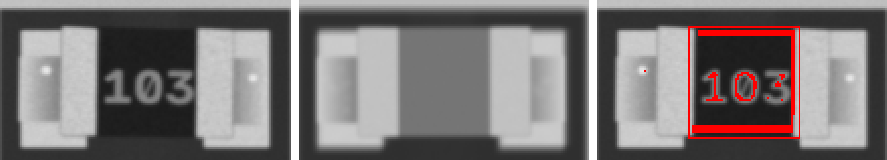
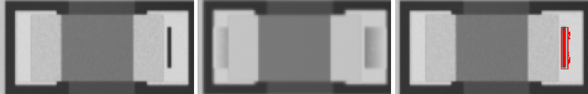
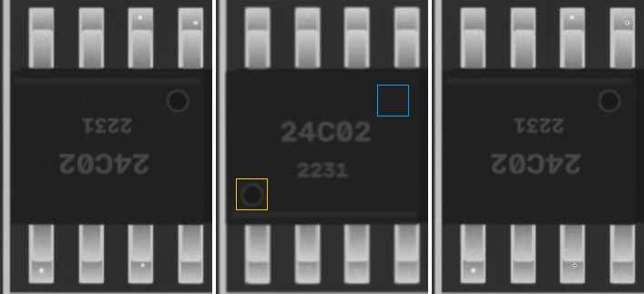
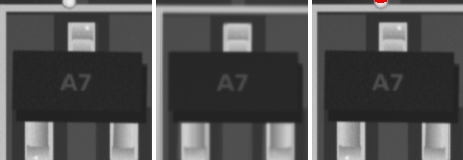

22p · 0805
MISMATCH

ncc 0.841 · ncc_thr 0.6 · mad 23.2 · mad_thr 8.4 · dx_mm -0.023 · dy_mm 0.0 · dtheta_deg -0.0 · anomaly_px 436
4u7 · 1206
ANOMALY

ncc 0.985 · ncc_thr 0.6 · mad 2.2 · mad_thr 8.6 · dx_mm 0.023 · dy_mm -0.023 · dtheta_deg -0.0 · anomaly_px 115
4k7 · 0603
ANOMALY

ncc 0.983 · ncc_thr 0.6 · mad 5.2 · mad_thr 10.2 · dx_mm 0.093 · dy_mm -0.023 · dtheta_deg -0.0 · anomaly_px 112
4k7 · 0805
ANOMALY

ncc 0.972 · ncc_thr 0.6 · mad 4.5 · mad_thr 9.4 · dx_mm -0.023 · dy_mm -0.047 · dtheta_deg 2.0 · anomaly_px 116
24C02 · SOIC-8
POLARITY

ncc 0.92 · ncc_thr 0.6 · mad 3.2 · mad_thr 7.5 · mark_ncc {'0': 0.128, '180': 0.943} · dx_mm 0.0 · dy_mm 0.0 · dtheta_deg -0.0 · anomaly_px 0
100u · CP_Elec_5x5.8
ncc 0.995 · ncc_thr 0.6 · mad 2.2 · mad_thr 8.6 · mark_ncc {'0': 0.999, '180': -0.098} · dx_mm 0.047 · dy_mm -0.023 · dtheta_deg -0.0 · anomaly_px 0
22p · 0402

ncc 0.884 · ncc_thr 0.6 · mad 6.6 · mad_thr 12.9 · dx_mm 0.047 · dy_mm -0.023 · dtheta_deg -4 · anomaly_px 0
4u7 · 0402
ncc 0.993 · ncc_thr 0.6 · mad 1.8 · mad_thr 9.4 · dx_mm -0.023 · dy_mm 0.0 · dtheta_deg -0.0 · anomaly_px 0
100n · 1206
ncc 0.995 · ncc_thr 0.6 · mad 1.9 · mad_thr 8.0 · dx_mm 0.0 · dy_mm 0.0 · dtheta_deg -0.0 · anomaly_px 0
100n · 0603
ncc 0.985 · ncc_thr 0.6 · mad 3.5 · mad_thr 9.3 · dx_mm -0.023 · dy_mm 0.0 · dtheta_deg -0.0 · anomaly_px 0
10u · 0805
ncc 0.989 · ncc_thr 0.6 · mad 2.1 · mad_thr 8.3 · dx_mm 0.0 · dy_mm -0.047 · dtheta_deg -0.0 · anomaly_px 0
4u7 · 0603
ncc 0.979 · ncc_thr 0.6 · mad 3.9 · mad_thr 9.4 · dx_mm -0.023 · dy_mm 0.0 · dtheta_deg -0.0 · anomaly_px 0
10u · 0603
ncc 0.98 · ncc_thr 0.6 · mad 3.5 · mad_thr 10.7 · dx_mm -0.023 · dy_mm -0.023 · dtheta_deg 2.0 · anomaly_px 0
100n · 0402
ncc 0.988 · ncc_thr 0.6 · mad 3.2 · mad_thr 12.8 · dx_mm -0.023 · dy_mm 0.0 · dtheta_deg -0.0 · anomaly_px 0
1u · 0402
ncc 0.991 · ncc_thr 0.6 · mad 3.2 · mad_thr 10.6 · dx_mm 0.0 · dy_mm 0.0 · dtheta_deg -0.0 · anomaly_px 0
Tantalum_Case-A · Tantalum_Case-A
ncc 0.993 · ncc_thr 0.6 · mad 3.0 · mad_thr 8.4 · mark_ncc {'0': 0.998, '180': 0.507} · dx_mm 0.023 · dy_mm 0.0 · dtheta_deg -0.0 · anomaly_px 0
22p · 0402
ncc 0.993 · ncc_thr 0.6 · mad 3.7 · mad_thr 11.4 · dx_mm 0.0 · dy_mm 0.0 · dtheta_deg -0.0 · anomaly_px 0
22p · 0603
ncc 0.97 · ncc_thr 0.6 · mad 4.0 · mad_thr 8.7 · dx_mm 0.0 · dy_mm -0.023 · dtheta_deg -0.0 · anomaly_px 0
4u7 · 0603
ncc 0.923 · ncc_thr 0.6 · mad 5.5 · mad_thr 9.6 · dx_mm 0.0 · dy_mm -0.07 · dtheta_deg -0.0 · anomaly_px 0
10u · 0603
ncc 0.995 · ncc_thr 0.6 · mad 2.4 · mad_thr 9.9 · dx_mm 0.0 · dy_mm 0.0 · dtheta_deg -0.0 · anomaly_px 0
1u · 0805
ncc 0.995 · ncc_thr 0.6 · mad 2.6 · mad_thr 8.3 · dx_mm 0.0 · dy_mm 0.023 · dtheta_deg -0.0 · anomaly_px 0
4u7 · 0402
ncc 0.987 · ncc_thr 0.6 · mad 2.8 · mad_thr 10.2 · dx_mm 0.0 · dy_mm 0.0 · dtheta_deg -0.0 · anomaly_px 0
4u7 · 0805
ncc 0.985 · ncc_thr 0.6 · mad 2.7 · mad_thr 8.3 · dx_mm -0.023 · dy_mm 0.023 · dtheta_deg -0.0 · anomaly_px 0
10u · 1206
ncc 0.97 · ncc_thr 0.6 · mad 2.9 · mad_thr 8.3 · dx_mm -0.047 · dy_mm 0.047 · dtheta_deg -0.0 · anomaly_px 0
4u7 · 1206
ncc 0.993 · ncc_thr 0.6 · mad 2.2 · mad_thr 8.4 · dx_mm 0.047 · dy_mm 0.0 · dtheta_deg -0.0 · anomaly_px 0
SOD-123 · SOD-123
ncc 0.996 · ncc_thr 0.6 · mad 1.0 · mad_thr 7.0 · mark_ncc {'0': 0.991, '180': 0.055} · dx_mm -0.047 · dy_mm -0.023 · dtheta_deg -0.0 · anomaly_px 0
SOD-123 · SOD-123
ncc 0.993 · ncc_thr 0.6 · mad 1.0 · mad_thr 7.0 · mark_ncc {'0': 0.943, '180': 0.093} · dx_mm -0.023 · dy_mm 0.0 · dtheta_deg -0.0 · anomaly_px 0
LED_0805 · LED_0805
ncc 0.981 · ncc_thr 0.6 · ncc_180 0.762 · mad 3.0 · mad_thr 9.6 · mark_ncc {'0': 0.0, '180': 0.0} · dx_mm 0.0 · dy_mm -0.07 · dtheta_deg -0.0 · anomaly_px 0
LED_0805 · LED_0805
ncc 0.983 · ncc_thr 0.6 · ncc_180 0.841 · mad 3.2 · mad_thr 9.3 · mark_ncc {'0': 0.0, '180': 0.0} · dx_mm 0.0 · dy_mm 0.07 · dtheta_deg -0.0 · anomaly_px 0
LED_0805 · LED_0805
ncc 0.992 · ncc_thr 0.6 · ncc_180 0.77 · mad 2.4 · mad_thr 9.3 · mark_ncc {'0': 0.0, '180': 0.0} · dx_mm 0.023 · dy_mm -0.023 · dtheta_deg -0.0 · anomaly_px 0
LED_0805 · LED_0805
ncc 0.96 · ncc_thr 0.6 · ncc_180 0.856 · mad 1.4 · mad_thr 8.2 · mark_ncc {'0': 0.0, '180': 0.0} · dx_mm 0.047 · dy_mm -0.047 · dtheta_deg -0.0 · anomaly_px 0
LED_0805 · LED_0805
ncc 0.99 · ncc_thr 0.6 · ncc_180 0.787 · mad 2.6 · mad_thr 8.3 · mark_ncc {'0': 0.0, '180': 0.0} · dx_mm -0.023 · dy_mm 0.023 · dtheta_deg -0.0 · anomaly_px 0
LED_0805 · LED_0805
ncc 0.989 · ncc_thr 0.6 · ncc_180 0.776 · mad 2.7 · mad_thr 8.2 · mark_ncc {'0': 0.0, '180': 0.0} · dx_mm 0.023 · dy_mm 0.0 · dtheta_deg -0.0 · anomaly_px 0
4u7 · L_4x4
ncc 0.977 · ncc_thr 0.6 · mad 4.0 · mad_thr 9.2 · dx_mm 0.0 · dy_mm 0.0 · dtheta_deg -0.0 · anomaly_px 0
4u7 · L_4x4
ncc 0.992 · ncc_thr 0.6 · mad 1.2 · mad_thr 7.1 · dx_mm -0.023 · dy_mm 0.023 · dtheta_deg -0.0 · anomaly_px 0
J3Y · SOT-23
ncc 0.965 · ncc_thr 0.6 · ncc_180 0.555 · mad 1.2 · mad_thr 7.2 · mad_180 5.3 · dx_mm 0.047 · dy_mm -0.023 · dtheta_deg 2.0 · anomaly_px 0
A7 · SOT-23

ncc 0.987 · ncc_thr 0.6 · ncc_180 0.493 · mad 1.2 · mad_thr 7.3 · mad_180 3.8 · dx_mm 0.0 · dy_mm 0.023 · dtheta_deg -0.0 · anomaly_px 0
A7 · SOT-23
ncc 0.99 · ncc_thr 0.6 · ncc_180 0.378 · mad 1.0 · mad_thr 7.1 · mad_180 14.0 · dx_mm 0.0 · dy_mm -0.023 · dtheta_deg -0.0 · anomaly_px 0
S4 · SOT-23
ncc 0.923 · ncc_thr 0.6 · ncc_180 0.671 · mad 1.6 · mad_thr 7.2 · mad_180 5.3 · dx_mm -0.07 · dy_mm 0.023 · dtheta_deg -0.0 · anomaly_px 0
W1 · SOT-23
ncc 0.992 · ncc_thr 0.6 · ncc_180 0.319 · mad 1.1 · mad_thr 7.1 · mad_180 28.3 · dx_mm 0.0 · dy_mm 0.023 · dtheta_deg -0.0 · anomaly_px 0
J3Y · SOT-23
ncc 0.985 · ncc_thr 0.6 · ncc_180 0.414 · mad 1.0 · mad_thr 7.1 · mad_180 3.6 · dx_mm 0.0 · dy_mm 0.0 · dtheta_deg -0.0 · anomaly_px 0
W1 · SOT-23
ncc 0.969 · ncc_thr 0.6 · ncc_180 0.319 · mad 1.0 · mad_thr 7.0 · mad_180 11.4 · dx_mm 0.0 · dy_mm 0.023 · dtheta_deg -0.0 · anomaly_px 0
J3Y · SOT-23
ncc 0.971 · ncc_thr 0.6 · ncc_180 0.359 · mad 1.0 · mad_thr 7.0 · mad_180 2.9 · dx_mm 0.0 · dy_mm 0.0 · dtheta_deg -0.0 · anomaly_px 0
J3Y · SOT-23
ncc 0.992 · ncc_thr 0.6 · ncc_180 0.279 · mad 1.0 · mad_thr 7.0 · mad_180 27.2 · dx_mm 0.0 · dy_mm 0.047 · dtheta_deg -0.0 · anomaly_px 0
10k · 0402
ncc 0.993 · ncc_thr 0.6 · mad 4.1 · mad_thr 19.3 · dx_mm -0.023 · dy_mm 0.0 · dtheta_deg -0.0 · anomaly_px 0
1k · 0603
ncc 0.989 · ncc_thr 0.6 · mad 4.5 · mad_thr 10.2 · dx_mm 0.047 · dy_mm 0.047 · dtheta_deg 2.0 · anomaly_px 0
220 · 0402

ncc 0.955 · ncc_thr 0.6 · mad 5.0 · mad_thr 15.2 · dx_mm -0.07 · dy_mm 0.0 · dtheta_deg -0.0 · anomaly_px 0
10k · 0603
ncc 0.987 · ncc_thr 0.6 · mad 4.7 · mad_thr 10.4 · dx_mm 0.07 · dy_mm 0.0 · dtheta_deg -0.0 · anomaly_px 0
0R · 0805
ncc 0.993 · ncc_thr 0.6 · mad 4.1 · mad_thr 9.3 · dx_mm 0.0 · dy_mm -0.047 · dtheta_deg -0.0 · anomaly_px 0
4k7 · 0402
ncc 0.982 · ncc_thr 0.6 · mad 4.9 · mad_thr 16.1 · dx_mm -0.047 · dy_mm 0.023 · dtheta_deg -0.0 · anomaly_px 0
10k · 1206
ncc 0.995 · ncc_thr 0.6 · mad 3.3 · mad_thr 8.9 · dx_mm -0.023 · dy_mm 0.0 · dtheta_deg -0.0 · anomaly_px 0
220 · 0805
ncc 0.987 · ncc_thr 0.6 · mad 4.4 · mad_thr 9.3 · dx_mm 0.093 · dy_mm 0.047 · dtheta_deg -0.0 · anomaly_px 0
220 · 0603
ncc 0.985 · ncc_thr 0.6 · mad 6.0 · mad_thr 10.6 · dx_mm -0.047 · dy_mm 0.0 · dtheta_deg -0.0 · anomaly_px 0
10k · 1206
ncc 0.995 · ncc_thr 0.6 · mad 2.8 · mad_thr 8.8 · dx_mm -0.023 · dy_mm -0.023 · dtheta_deg -0.0 · anomaly_px 0
1k · 0805
ncc 0.993 · ncc_thr 0.6 · mad 5.0 · mad_thr 9.7 · dx_mm 0.0 · dy_mm -0.047 · dtheta_deg -0.0 · anomaly_px 0
1k · 0603
ncc 0.986 · ncc_thr 0.6 · mad 5.3 · mad_thr 13.0 · dx_mm 0.07 · dy_mm 0.0 · dtheta_deg -0.0 · anomaly_px 0
100k · 0805
ncc 0.996 · ncc_thr 0.6 · mad 3.4 · mad_thr 9.3 · dx_mm 0.023 · dy_mm 0.0 · dtheta_deg -0.0 · anomaly_px 0
220 · 0603
ncc 0.985 · ncc_thr 0.6 · mad 4.3 · mad_thr 10.2 · dx_mm 0.0 · dy_mm 0.023 · dtheta_deg -0.0 · anomaly_px 0
10k · 0805
ncc 0.996 · ncc_thr 0.6 · mad 3.8 · mad_thr 9.5 · dx_mm 0.023 · dy_mm 0.0 · dtheta_deg -0.0 · anomaly_px 0
1k · 0402
ncc 0.989 · ncc_thr 0.6 · mad 3.5 · mad_thr 18.4 · dx_mm -0.047 · dy_mm 0.0 · dtheta_deg -0.0 · anomaly_px 0
4k7 · 0402
ncc 0.984 · ncc_thr 0.6 · mad 8.0 · mad_thr 14.9 · dx_mm 0.0 · dy_mm -0.023 · dtheta_deg -0.0 · anomaly_px 0
0R · 0805
ncc 0.991 · ncc_thr 0.6 · mad 4.5 · mad_thr 9.3 · dx_mm 0.047 · dy_mm 0.0 · dtheta_deg -0.0 · anomaly_px 0
GD32F303 · LQFP-48
ncc 0.956 · ncc_thr 0.6 · mad 1.5 · mad_thr 7.8 · mark_ncc {'0': 0.945, '90': 0.016, '180': 0.004, '270': 0.166} · dx_mm 0.023 · dy_mm 0.0 · dtheta_deg -0.0 · anomaly_px 0
ESP32-C3 · QFN-32
ncc 0.969 · ncc_thr 0.6 · mad 1.4 · mad_thr 7.4 · mark_ncc {'0': 0.991, '90': 0.272, '180': 0.124, '270': 0.17} · dx_mm 0.0 · dy_mm 0.0 · dtheta_deg -0.0 · anomaly_px 0
TL072 · SOIC-8
ncc 0.966 · ncc_thr 0.6 · mad 1.1 · mad_thr 7.2 · mark_ncc {'0': 0.963, '180': 0.216} · dx_mm 0.023 · dy_mm -0.023 · dtheta_deg -0.0 · anomaly_px 0
STM32F030 · TSSOP-20
ncc 0.971 · ncc_thr 0.6 · mad 1.5 · mad_thr 7.6 · mark_ncc {'0': 0.939, '180': 0.166} · dx_mm 0.0 · dy_mm -0.047 · dtheta_deg -0.0 · anomaly_px 0
STM32F030 · TSSOP-20
ncc 0.972 · ncc_thr 0.6 · mad 1.1 · mad_thr 7.3 · mark_ncc {'0': 0.949, '180': 0.112} · dx_mm 0.0 · dy_mm 0.023 · dtheta_deg -0.0 · anomaly_px 0
STM8S105 · TQFP-32
ncc 0.939 · ncc_thr 0.6 · mad 1.4 · mad_thr 7.5 · mark_ncc {'0': 0.974, '90': 0.097, '180': 0.112, '270': 0.135} · dx_mm -0.023 · dy_mm -0.047 · dtheta_deg -0.0 · anomaly_px 0
AMS1117 · SOT-223
ncc 0.991 · ncc_thr 0.6 · ncc_180 0.4 · mad 0.9 · mad_thr 7.1 · mad_180 5.5 · dx_mm -0.023 · dy_mm 0.047 · dtheta_deg -0.0 · anomaly_px 0
LD1117 · SOT-223
ncc 0.983 · ncc_thr 0.6 · ncc_180 0.313 · mad 1.4 · mad_thr 7.1 · mad_180 6.3 · dx_mm 0.0 · dy_mm 0.0 · dtheta_deg -0.0 · anomaly_px 0
LD1117 · SOT-223
ncc 0.988 · ncc_thr 0.6 · ncc_180 0.421 · mad 1.2 · mad_thr 7.3 · mad_180 7.3 · dx_mm -0.023 · dy_mm -0.07 · dtheta_deg -0.0 · anomaly_px 0
Crystal_SMD_3225 · Crystal_SMD_3225
ncc 0.996 · ncc_thr 0.6 · mad 2.3 · mad_thr 9.1 · dx_mm -0.047 · dy_mm 0.0 · dtheta_deg -0.0 · anomaly_px 0